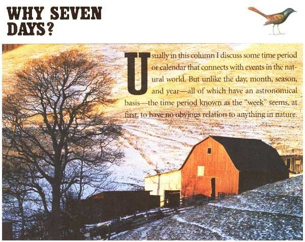
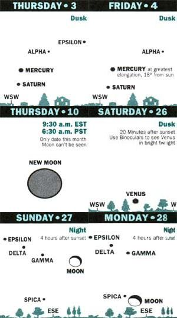
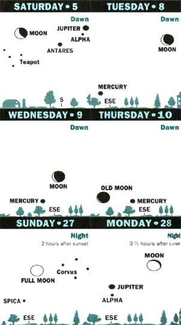
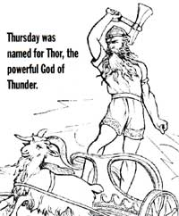
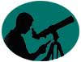

SEASONS
COMING IN JUNE: The rings on Saturn will be the narrowest they've been in over a decade.
SKY CALENDAR OF SPECIAL EVENTS FOR
1994
About the only astronomical time period to which the week roughly corresponds is the period occurring between the four major lunar phases; there are approximately seven days from new moon to first quarter moon, from the first quarter moon to full moon, and so on. But this hardly seems as if it would have been important enough-especially to agricultural civilizations of ancient times-to warrant making it a major unit in the calendar.
Interestingly enough, the length of the week has differed in various societies. Some West African societies have a week made up of just five days, while the Chinese once had 15-day weeks. But for now we will focus on the seven-day week that has been favored by Western civilization since the latter days of the Roman Empire and by international usage in modern times.
You might suppose that Jews and Christians came to adopt the seven-day week simply in imitation of God's six days of creation and one of rest, from the Book of Genesis. But there is another strand in the establishment of the seven-day week, and it goes back much further than the beginnings of the Hebrew culture and traditions. The very ancient Sumerian civilization of Mesopotamia apparently used the seven-day week as well. According to writer Guy Ottewell, the Sumerians-who numbered the days of their months-regarded the 7th, 14th, 21st, and 28th days as "ominous." Of course, to point this belief out still begs the question. Why did the Sumerians choose seven days as the number of the interval between each of their ominous days of the month?
The most likely answer is that there are seven celestial objects that have been known since ancient times to move regularly against the background of the distant unchanging stars: the five bright planets, the Sun, and the Moon. In the English language, the names of the days of the week are named partly for early Germanic and Norse gods: Tuesday for Tiw or Tiu (War God); Wednesday for Woden or Odin (King of Gods); Thursday for Thor (Thunder God); and Friday for Frigga (Queen of Gods). But Sunday and Monday are the days of the Sun and Moon, respectively, and Saturday is Saturn's Day.
What's more, in European cultures that speak languages derived from Latin, all of the days of the week are named for the Sun, Moon, and planets. And this brings us to a connection with our current month-Mardi Gras. The name, which means "Fat Tuesday," is the last day of feasting (and revelry) before the long fasting of Lent. The French name for Tuesday is Mardi, Mars's Day. What's the Latin term for the month of Mars? March, of course.
Astronomy: Identifying Full Moons
The planet Mars is not well placed for observation in February and March 1994 (although it is paired closely with Saturn on March 14). But our "Sky Calendar" (right) shows some of the sky sights you may wish to look for. While it doesn't show the full moons occurring during these months, the "Almanac Table" mentions several of the moons by their wonderfully evocative names.
February's full moons, Snow Moon and Hunger Moon, come straight from the Algonquins. In colonial times these native American tribes once roamed the region from present-day New England to Lake Superior. Then, when the first European colonists came to the northeastern part of the New World, they brought their own names for some of the full moons of the year. However, they were so struck by the names that Algonquin tribes had assigned that they incorporated them into their own list. While other tribes of North America had their own names for the moon-which you can look up in Kim Long's The Moon Book (Johnson Books; 1988)-it is those of the Algonquins that have been preserved by Old Farmer's Almanac right up to the present.
Diagrams for dusk and dawn show scenes about 45 minutes after sunset or before sunrise, as viewed from 40° north latitude (approximately correct for the U.S. and southern Canada). -Adapted from Sky Calendar, Abrams Planetarium, Michigan State University, East Lansing, MI 48824.
For Native Americans these special names not only applied to the full moon itself, but to the entire month that the moon marked. With this comes a complication: the period from full moon to full-moon is only about 29f days, so it's possible every few years to have 13 full moons in one calendar year. We can preserve the beautiful system of naming each full moon by using one of the alternate names when there are two per month. (For instance, if there are two full moons in March, name one Worm Moon and the other Crow or Sap Moon.)
Currently, the two full moon names on which almost everyone agrees are Harvest Moon and Hunter's Moon, the full moons of September and October. Harvest Moon should be regarded as the full moon occurring nearest to the start of autumn which means that it can sometimes take place in early October. Hunter's Moon should always be the next full moon after Harvest Moon.
Snow's Strange Cousin
Once, in Binghamton, New York, I looked out the window and was amazed to see that three or four inches of new snow had gathered on the ground in the past hour and a half. But when I walked outside I discovered that what was falling was not snow. Or sleet. Or hail. And it was certainly not rain.
White pellets, approximately 1/3 of an inch (and more) wide and of roughly spherical shape, were falling from the sky. The pellets were soft yet not quite mushy, and slightly resilient. The sound of their fall was unlike anything I'd heard before or have heard since. I was pretty sure that the name of this strange substance began with the letter "g," but could not remember the rest of it. So I checked a book and found out that I was right. I had been walking in a fall of the rarest major form of precipitation: graupel.
Graupel (the "au" pronounced the same as the "ow" of "howl") is sometimes called "soft hail" or "snow grains." But when you actually experience it you'll be convinced that it really does deserve its own special name. Graupel is actually an aggregate of cloud droplets, sometimes with a cluster of ice needles or a starshaped snow crystal at the center. Graupel itself is sometimes the core for hailstone. It is most common in blizzards and lake-effect snowstorms. Graupel can be electrified enough to cause bursts of static noise when it hits a radio antenna.
Perhaps one day you will have the chance to see this precipitation and ask friends, "Guess what it's doing outside?" All of their attempts will utterly fail, because it won't be raining, snowing, hailing, or sleeting outside. It'll be graupeling.
The First Grackle of Spring
While most of us look forward to the first robin of spring, the wait can seem impossibly long as the February snow continues to pile. But in much of the United States, the lovable robin is preceded by another bird, a bird whose name is not all that well known despite the fact that it is one of the most common in all of North America.
I am referring to the grackle. This black bird-bigger than a robin and smaller than a crow-has a long wedge-shaped tail, dark shiny feathers, and yellow eyes. In addition to spotting it in
North America, you can also see it throughout southern Canada, east of the Rockies. "Grackle" couldn't be a more appropriate name for this bird whose vocalizations seem to be a mixture of creaks, whistles, and gurgles. Like most black birds, this one is also sharp of mind, eye, and beak. It's an admirably smart bird, whose sounds have a primitive, cracked beauty if you open your ears and mind. Unfortunately, the grackle is capable of being a real pest, especially to crop growers. Farmers who grow corn and rice know the grackle well, and probably don't have all that much admiration for their smarts or their vocals. However, we should forgive the grackle for its behavior because it is also a sign of spring.
Not all grackles migrate and some may have migrated from farther north to where you live in winter. But if you spot a number of seemingly newly arrived blackbirds with yellow eyes and wedgeshaped tails in your yard or at the park in February or early March, you may be witnessing a sign that spring is just around the corner.
Origins of St. Valentine's Day
While many people would like to know exactly who St. Valentine was, the truth is that very little is known about him. No one knows where or when he lived. As for how the saint came to be associated with lovers, it's pretty much speculation.
One theory is that February 14 was date on which birds begin to mate, making it an appropriate time for human lovers to become romantically involved. Others say February 2 is the day when lovers were originally paired together for spring weddings, but that date was moved to the 14th before the 15th century because it was thought inappropriate to have it occur on the same day as Candlemas, a day associated with the Virgin Mary.
In the Pagan Book of Days by Nigel Pennick (Destiny Books; 1992), the claim is made that February 14 was the day of Juno Februa, "the goddess of love:' Of course, Venus is the primary goddess of love in Roman mythology, so who was Juno Februa? When I looked up the various forms of the queen goddess in a mythology encyclopedia, I found 15 mentions of the name Juno, but none of Juno Februa. In Roman custom, the febra were the rites of purification and of the dead; the month Febrarius (February)-the last month in the original Roman year-was devoted to these rites.
[Editor's Note. In issue #141, times and dates should have been listed for the star charts. For the top chart, view the stars at 10 P.m. in mid-January, and 8 P.m. in mid-February. For the bottom chart, view at midnight (standard time) in mid-March, 11 P.m. (daylight savings time) in midApril, and at 9 P.m. (daylight savings time) in midMay.
February 1884
1 Mercury, Saturn conjunction.
2 Candlemas; Groundhog Day.
3 LAST QUARTER MOON, 3:06 Am.
4 Mercury at greatest eastern elongation in evening sky.
5 Halfway point of winter.
10 NEW MOON, 9:30 A.M.; Chinese New Year 4692 (Year of the Dog).
12 Lincoln's Birthday.
14 St. Valentine's Day.
15 Shrove Tuesday (Mardi Gras).
16 Ash Wednesday (Lent begins and continues until Easter, which is April 3 this year); Sun enters constellation Aquarius.
18 FIRST QUARTER NEON, 12:47 p.m.; Sun enters astrological sign Pisces.
21 President's Day.
22 Washington's Birthday.
25 FULL MOON (Snow Moon or Hurler Moon), 8:15 PM.
March 1894
4 LAST QUARTER MOON, 11:53 A.M.
11 Sun eaters the constellation tees.
12 NEW MOON, 3:05 Am.; very low in the west, ultra thin "your" moon, 16 hours past New Moon at sunset on the East Coast. 13 Mothering Sunday (4th Sunday in Lent, a brief lessening of Lent in which boys can go back to visit their mothers).
14 Mars-Saturn conjunction.
17 St. Patrick's Day.
18 Mercury at greatest western elongation in dawn sky but not very high in us.
19 The swallows return to San Juan Capistrano.
20 VERNAL EQUINOX 8:28 P.m.; FIRST QUARTER MOON, 7:14 Am.; Sun embers astrological sir Aries let the equinox).
22 Indian (Sake) New Year 1916.
24 Mercury, Saturn conjunction.
25 Feast of the Annunciation, or Lady Day hire angel Gabriel tells Mary she will give birth to Jesus.)
27 Palm Sunday; Passover; FULL MOON (Worm Moon, Crow Moon, Crust M0011, or Sap Moon), 6:09 Am.
29 Moon rises in south-southeast, directly below Jupiter, several hours after sunset
January was a month of few special events in the heavens, but the rest of 1994 offers a variety of celestial wonders. The May solar eclipse is the most visible event for the contiguous United States to occur in several decades. The impact of a large comet on Jupiter this July has never before been witnessed, and may have never even occurred in the thousands of years of human history.
Eclipses: Three of 1994's four eclipses will be visible from all 50 states except for Alaska and Hawaii. The first, on May 10, is an "annular eclipse" of the Sun as seen from a wide band bisecting the country from New Mexico to Maine, and a large partial eclipse for the rest of the country. Most Americans will notice an impressive darkening of sky and landscape. (Remember: Only look at the Sun with proper protection.) I will give details about making such observations and the eclipse in general in the upcoming issue.
If you want to see a total eclipse of the Sun in 1994, check astronomical magazines for tours to South America to view the total solar eclipse there on November 3.
Meanwhile, this year's lunar eclipses include a small partial eclipse on May 25 and a large penumbra (almost partial) eclipse on November 18. Neither will be spectacular, but both will still be good examples of the shadow of the world we live on, touching the face of the Moon.
Planets and Conjunctions: This will be a very intriguing year to watch Jupiter and Saturn by telescope, and-at certain times- Venus, Mars, and Mercury with the naked eye. We will be treated to an unusual number of close "conjunctions" (i.e., meetings) of planets with each other and with the Moon and stars.
Jupiter is at its brightest in 1994 during late April, but if you have a telescope, the date to mark on your calendar is July 7th. On that day comet Shoemaker-Levy will strike Jupiter. No one is sure exactly what we will see. But the blast may light up the moons of Jupiter, creating long-lasting disruptions in the clouds of Jupiter, which will be easily visible with small telescopes (and perhaps even visible to the naked eye).
The tilting of the rings of Saturn will be exciting this year. In June, the rings will be the narrowest they have been in over a decade. Naked-eye observers will enjoy seeing Venus as "Evening Star" in spring and summer, as "Morning Star" in November and December.
Mars will not begin to brighten until September, but will be a striking sight near Regulus on December 8. Elusive Mercury is best seen low in the West about 45 minutes after sunset in early February and late May, 45 minutes before sunrise in early November.
Best conjunctions of the year include those of Venus and the Moon at dusk on April 12 and at dawn on November 30. Venus is splendid near Regulus on July 10, and the star Spica on August 31. Venus and Jupiter don't have an official conjunction but will be fairly close to each other and low in the Southeast after sunset in October.
Meteor Shows and Other Wonders. No one knows when the next brilliant new comet or Northern Lights display will appear. But we do know what nights to expect this year's major meteor showers. If you choose an observation spot located miles away from city lights in clear, moon-free conditions, you will see 10, 20, 30, or more meteors from a few of these showers in their peak hour.
In 1994, a bright Moon interferes with viewing most of the major showers, but watch for the Perseids. On the night of August 11-12 a good display-dozens of bright Perseids per hour-seems assured, and an hour-long Perseid storm shooting out of the Northeast or North around 3 A.M. (EST) is a distinct possibility.
|
 WILLIAM A. BAKE/PITURESQUE |
 |
 |
|
 |
 |
|